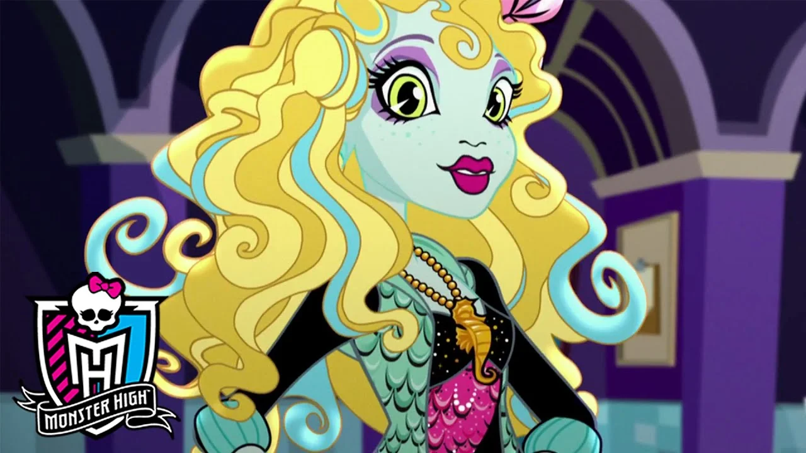

Draculaura é Filha adotiva do Conde Drácula. Ela é uma vampiro vegetariana, ou seja, ela não bebe sangue. Draculaura é a melhor amiga de Frankie Stein e Clawdeen Wolf, e está atualmente namorando Clawd Wolf. O nome que foi dado por sua mãe era apenas Laura.
Cleo de Nile é filha de A Múmia, Cleo é uma princesa extremamente real, de modo que ela espera que todos a tratá-la como rainha. Normalmente, a sua atitude é egoísta, mimada e arrogante, ela não pode ser totalmente responsabilizado pelo seu comportamento, porque está demonstrado que ela foi criada para ser assim.
Clawdeen Wolf é uma fashionista feroz, e se destaca em qualquer multidão. Ela é filha do Lobisomen e tem muitos irmãos. De acordo com o diário de Ghoulia, ela fica um pouco "estranha" quando esta na presença da lua cheia.Ela também é ferozmente leal e protetora de seus amigos e família, mas pode ficar nervosa facilmente, quando sua lealdade se sente ameaçada.
É filha do monstro Frankenstein e da noiva dele, Frankie é o uma nova aluna na escola Monster High, tendo apenas 15 dias de nascimento. Ela é muito simpática e atlética, nunca perdendo tempo sendo negativa, mas tem um traço desajeitado, como as partes de seu corpo tendem a sair voar. Ela também é muito ingênua, devido a sua idade muito jovem, ela não sabe muito sobre a vida e as coisas típicas de adolescente
Lagoona cresceu na Assustadora Barreira de Corais como a filha mais velha de um monstro marinho,tem as habilidades de qualquer criatura marinha típica ou qualquer criatura aquática. Seu cabelo fica azul quando está embaixo d'água. Ela é paciente e atenciosa, mas não ameniza suas mensagem nem permite que alguém a destrate. Ela quase nunca é malvada, mas é apaixonada por amizade e defenderá seus amigos ferozmente.
Ghoulia é descrita como inteligente, sofisticada e tímida. Ela é uma enorme viciada em livros e é muito intelectual. Ghoulia vive com seus pais, que são zumbis, quando ela não está estudando, inventando ou experimentando, é mais provável que Ghoulia esteja lendo uma história em quadrinhos ou escrevendo e desenhando a sua própria.